材料 5個分
※粉量を変えると自動計算されます
生地
塗り用
型
作り方
生地
STEP 1
ホームベーカリーで生地を20分こねる
ホームベーカリーに材料をセットして「生地コース」を選び、生地をこねます。一次発酵が始まる前に生地を取り出し、次の作業に進みます。
ホームベーカリーに材料をセットして「生地コース」を選び、生地をこねます。一次発酵が始まる前に生地を取り出し、次の作業に進みます。
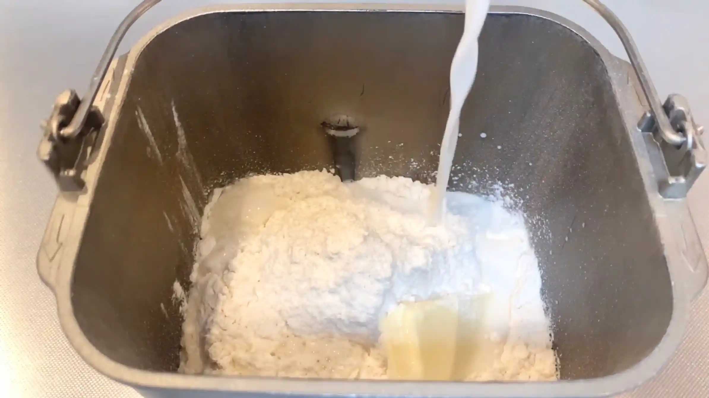
STEP 2
生地を取り出しラップをかけて常温で15分おく
ここで生地を休ませることで、次の工程で生地を伸ばしたり成形したりしやすくなります。
ここで生地を休ませることで、次の工程で生地を伸ばしたり成形したりしやすくなります。
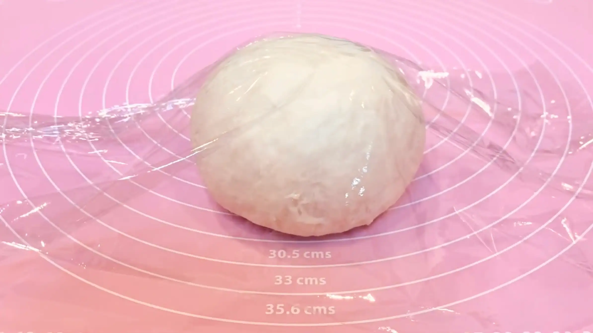
STEP 3
生地を30cm×30cmに伸ばす
まず生地を手で押さえて、厚みを揃えます。そこからめん棒を使って伸ばしていきますが、長方形に伸ばす際は、中央から左上、右上、左下、右下へと、めん棒を外側に向かって動かします。中央から四隅へ均等に伸ばしていくと、自然と四角い形に整っていきます。（動画では生地に十字の切れ込みを入れて伸ばしていますが、四隅に伸ばすやり方の方が生地に優しいためおすすめです。）
まず生地を手で押さえて、厚みを揃えます。そこからめん棒を使って伸ばしていきますが、長方形に伸ばす際は、中央から左上、右上、左下、右下へと、めん棒を外側に向かって動かします。中央から四隅へ均等に伸ばしていくと、自然と四角い形に整っていきます。（動画では生地に十字の切れ込みを入れて伸ばしていますが、四隅に伸ばすやり方の方が生地に優しいためおすすめです。）
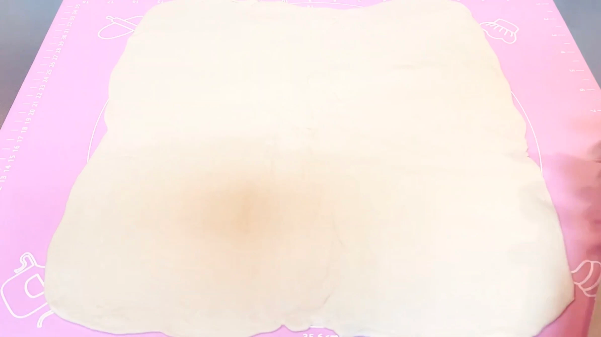
STEP 4
生地に1/3量のバターを塗る
バターはヘラでスムーズに伸ばせる程度に柔らかくし、生地全体にできるだけ均一に塗り広げます。
バターはヘラでスムーズに伸ばせる程度に柔らかくし、生地全体にできるだけ均一に塗り広げます。
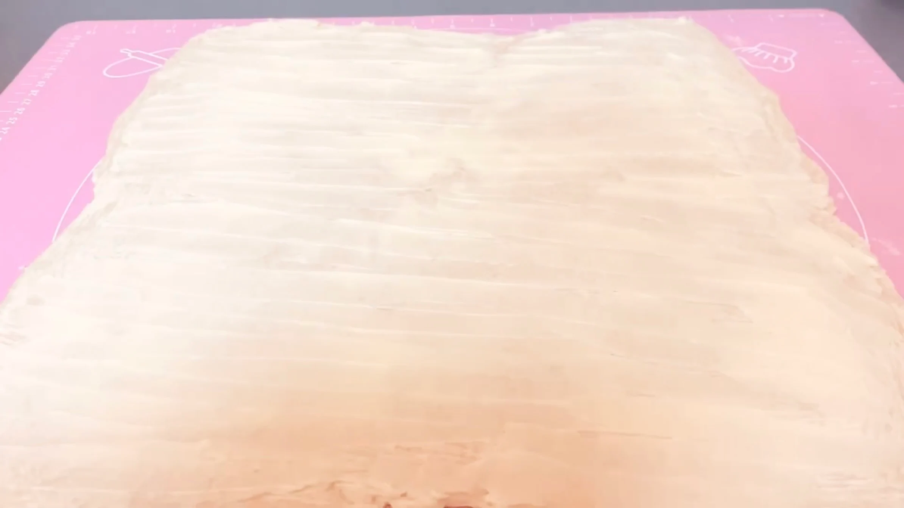
STEP 5
三つ折りする（1回目）
生地が薄いので、破れないように優しく折り畳みます。
生地が薄いので、破れないように優しく折り畳みます。
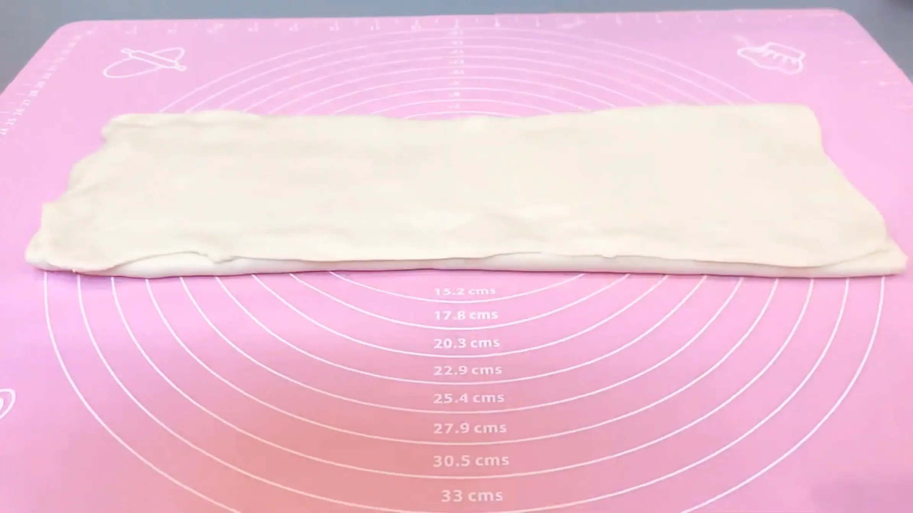
STEP 6
裏返して、生地に1/3量のバターを塗る
裏側にバターがはみ出していることがあります。はみ出したバターを中に折り込むために、生地を裏返してから再度バターを塗ります。
裏側にバターがはみ出していることがあります。はみ出したバターを中に折り込むために、生地を裏返してから再度バターを塗ります。
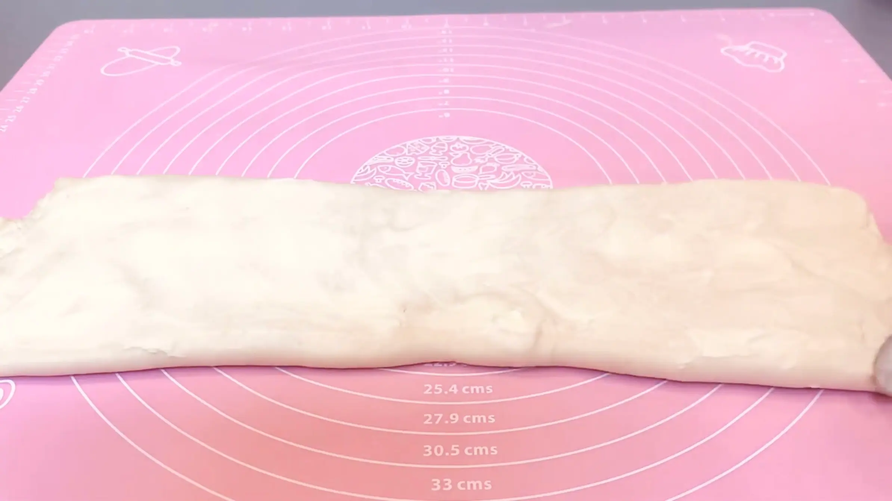
STEP 7
三つ折りする（2回目）
折り目と端をそろえて三つ折りにします。位置がずれると、伸ばすときに生地が部分的に薄くなったり、バターがはみ出したりしやすくなるので、ここで形をきれいに整えておきます。
折り目と端をそろえて三つ折りにします。位置がずれると、伸ばすときに生地が部分的に薄くなったり、バターがはみ出したりしやすくなるので、ここで形をきれいに整えておきます。
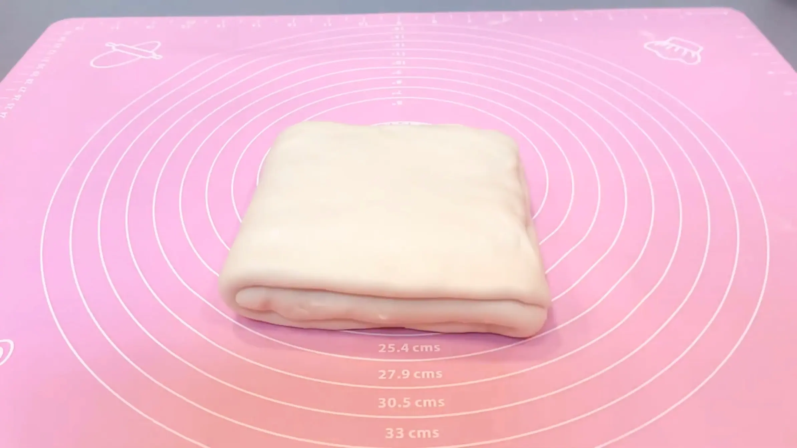
STEP 8
生地を35cmに伸ばして裏返し、1/3量のバターを塗る（[動画 04:18]）
三つ折りにした生地は、最初にめん棒で軽く押さえて層をなじませます。いきなり強く伸ばすと、層がずれたりバターが押し出されたりしやすいため、少しずつ転がして35cmまで伸ばします。そのあと裏返して、残りの1/3量のバターを塗ります。
三つ折りにした生地は、最初にめん棒で軽く押さえて層をなじませます。いきなり強く伸ばすと、層がずれたりバターが押し出されたりしやすいため、少しずつ転がして35cmまで伸ばします。そのあと裏返して、残りの1/3量のバターを塗ります。
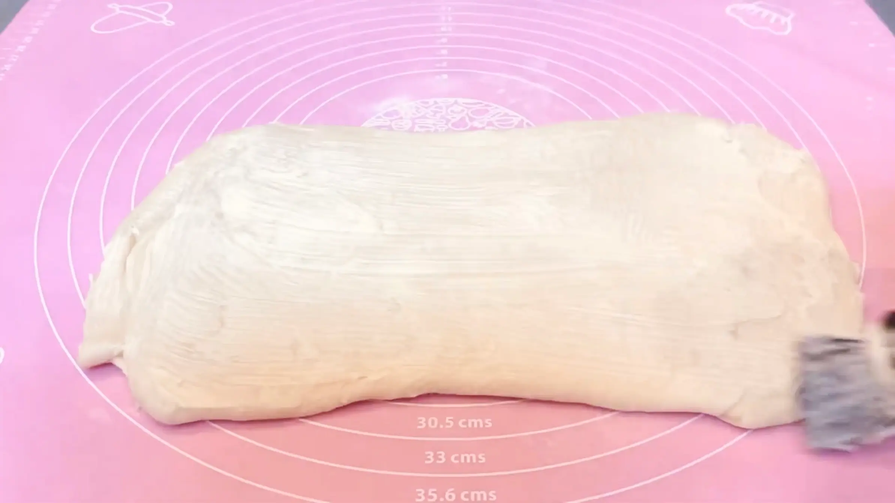
STEP 9
三つ折りする（3回目）
折り目や端をできるだけ揃えて三つ折りします。
折り目や端をできるだけ揃えて三つ折りします。
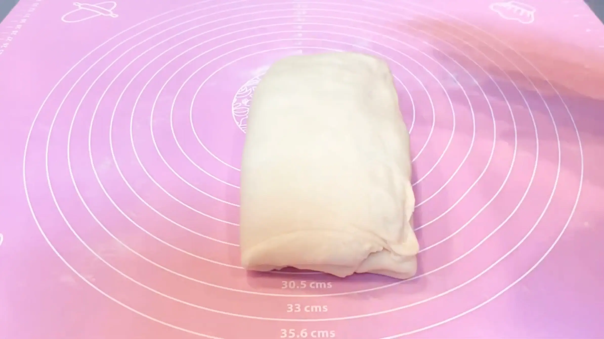
STEP 10
ラップをして冷蔵庫で30分冷やす
三つ折りを3回終えた生地をラップで包み、冷蔵庫で30分休ませます。バターと生地が締まって、次の15本に切り分ける工程が進めやすくなります。生地がやわらかいままなら、無理に先へ進まず、もう少し冷やしてください。
三つ折りを3回終えた生地をラップで包み、冷蔵庫で30分休ませます。バターと生地が締まって、次の15本に切り分ける工程が進めやすくなります。生地がやわらかいままなら、無理に先へ進まず、もう少し冷やしてください。
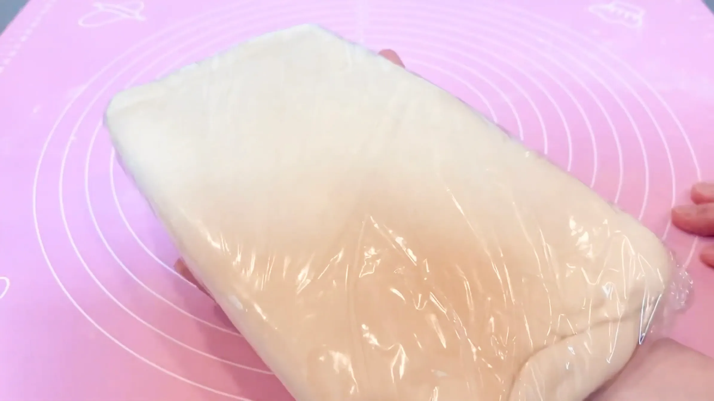
STEP 11
型にバターを塗っておく
バターを塗っておくことで生地が型にくっつきにくくなり、焼きあがりに取り出しやすくなります。塗り残しがないよう、全体に薄く均一に広げます。
バターを塗っておくことで生地が型にくっつきにくくなり、焼きあがりに取り出しやすくなります。塗り残しがないよう、全体に薄く均一に広げます。
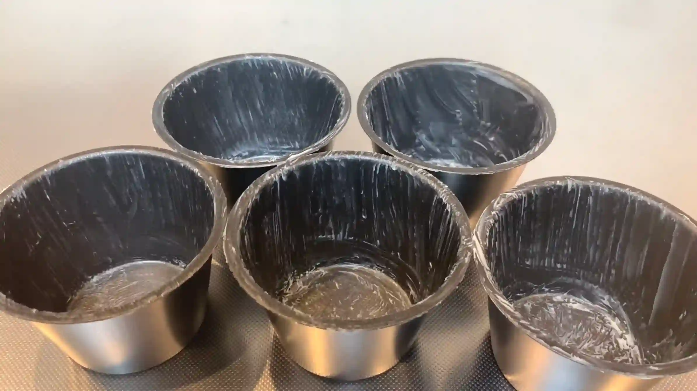
STEP 12
生地を横15㎝に伸ばし、1cm幅で15本に切り分ける（[動画 05:10]）
この方向は生地が伸びにくく少し難しいですが、丁寧に伸ばしていきます。ここで厚みを揃えることで、仕上がりが綺麗になります。
この方向は生地が伸びにくく少し難しいですが、丁寧に伸ばしていきます。ここで厚みを揃えることで、仕上がりが綺麗になります。
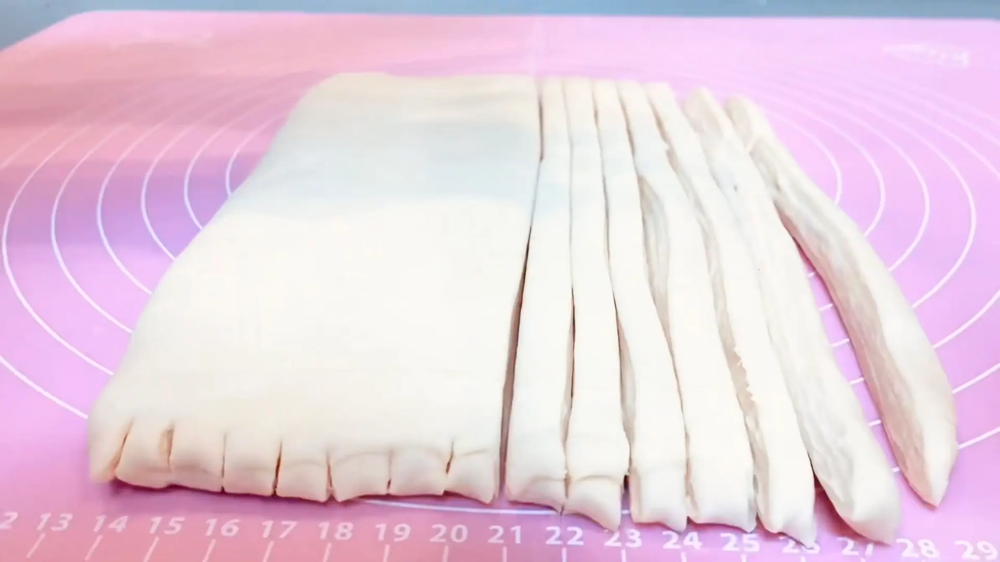
STEP 13
3本の生地を画像のようにおく
断面を表にして、それぞれを交差させるようにおきます。
断面を表にして、それぞれを交差させるようにおきます。
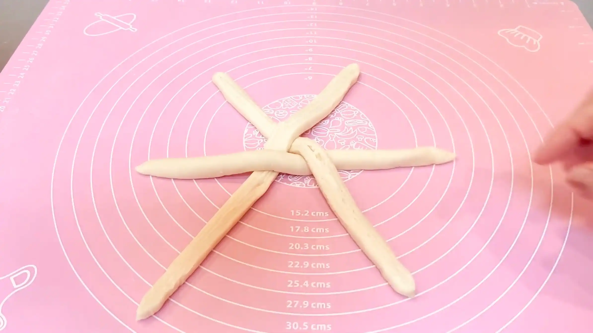
STEP 14
編み込む（詳細は[動画 07:02]をご参照ください）
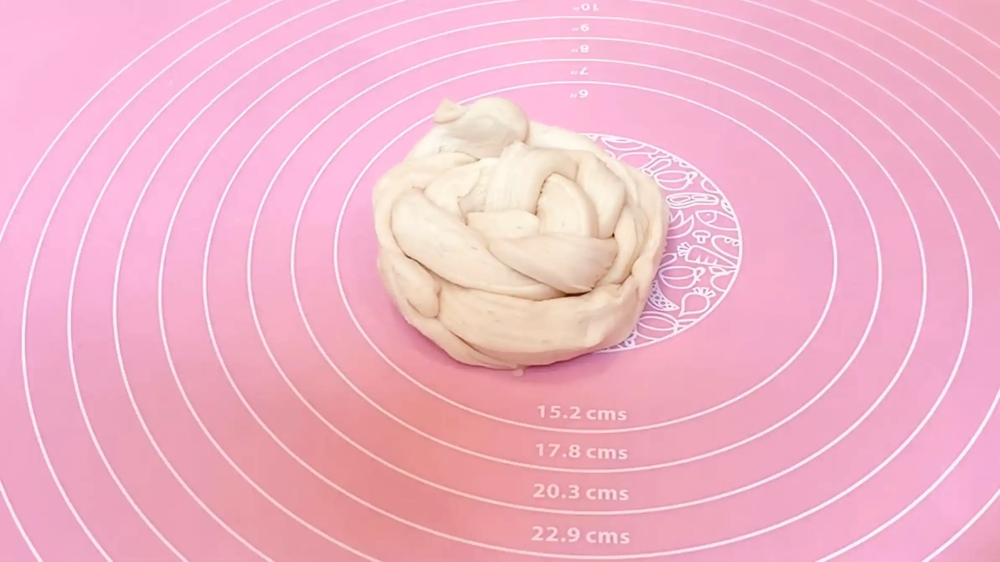
STEP 15
生地をひっくり返してマフィン型に入れる
少し丸めて、とじ目が下になるように型に入れます。
少し丸めて、とじ目が下になるように型に入れます。
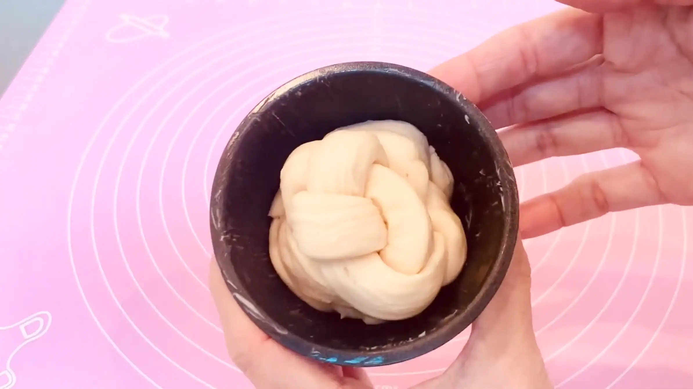
STEP 16
ラップをして、常温で2時間おく
一度冷蔵した生地は冷えているため、発酵が進むまでに時間がかかります。発酵時間は室温や生地の温度によって変わるので、時間だけで判断せず、生地がひと回り大きくなり、全体がふんわりとしてきた状態を目安にしてください。また、温度が高すぎると生地に塗ったバターが溶けて層が崩れやすくなります。暖かい場所で発酵させる場合も、バターが溶け出さないよう温度に注意してください。
一度冷蔵した生地は冷えているため、発酵が進むまでに時間がかかります。発酵時間は室温や生地の温度によって変わるので、時間だけで判断せず、生地がひと回り大きくなり、全体がふんわりとしてきた状態を目安にしてください。また、温度が高すぎると生地に塗ったバターが溶けて層が崩れやすくなります。暖かい場所で発酵させる場合も、バターが溶け出さないよう温度に注意してください。
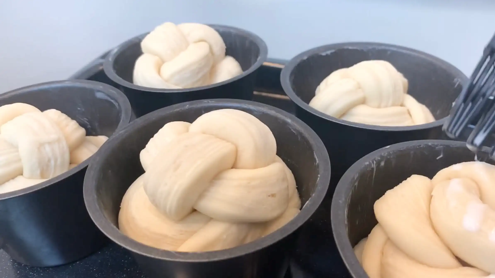
STEP 17
牛乳をぬり、予熱したオーブン190℃で25分焼く
牛乳を塗ることで、表面にきれいな焼き色がつきやすくなります。焼き時間や温度は目安とし、ご家庭のオーブンによってご調整ください。（途中表面が焦げそうな場合は、アルミホイルを被せてください。）
牛乳を塗ることで、表面にきれいな焼き色がつきやすくなります。焼き時間や温度は目安とし、ご家庭のオーブンによってご調整ください。（途中表面が焦げそうな場合は、アルミホイルを被せてください。）
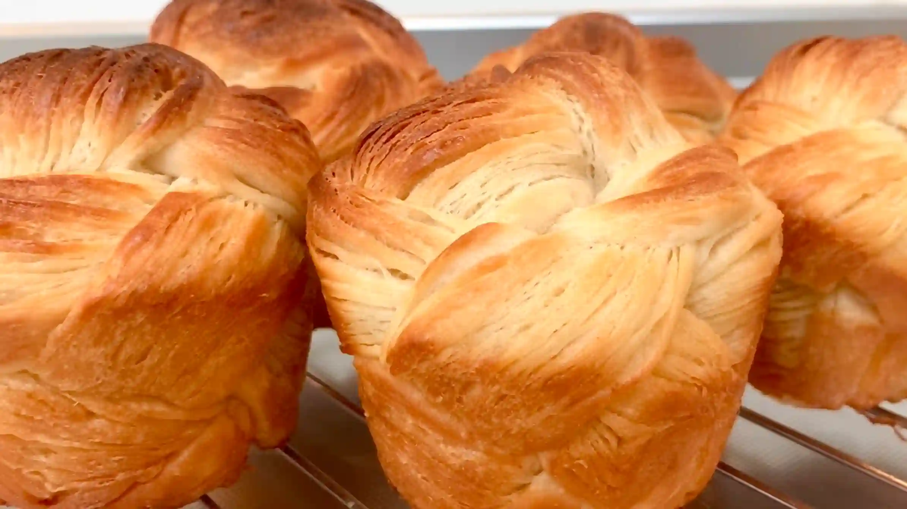
動画でチェック
おいしく作るためのワンポイントコラム
こんにちは、おなおドーナツです！
今回は、クロワッサンとマフィンを合体させた『クロフィン』をおうちで作っていきます。工程が多くて難しいイメージのある折り込み生地ですが、手軽にそしておいしく作るための3つのコツをまとめました。
① 生地作りのコツ
デニッシュ特有のサクサク感と、折り込み時の伸ばしやすさを両立させるため、強力粉4：薄力粉1の割合で粉をブレンドして仕込みます。薄力粉を合わせることでグルテンの結合が程よく抑えられ、生地が格段に伸ばしやすくなります。今回はホームベーカリーで生地を捏ねていますが、手捏ねで作る場合は、バターが馴染むまで5分ほど捏ね、60分程一次発酵させて折り込みの工程に進んでください。
② バターは塗るだけ
バターシートを作る必要はありません。常温のバターを生地に塗るだけで、綺麗な層を作ることができます。生地を三つ折りして伸ばし、バターを塗る作業を繰り返すことで、生地とバターが交互に重なり層が生まれ、クロワッサンのようなリッチな味わいに仕上がります。
③ 綺麗な成形のコツ
バターを折り込んだ生地は、そのまま成形に入ると摩擦や体温でバターが溶け、層が潰れてしまいます。そのため、一度ラップをして冷蔵庫で30分しっかり冷やすのが重要なポイントです。生地とバターを冷やし固めることで、1cm幅の棒状に美しくカットでき、3本での編み込み成形が格段に綺麗に行えるようになります。
マフィン型の中で溶け出したバターが循環し、表面がカリッと焼き上がったクロフィンは最高！バターの香りに包まれながら、幸せなひと時をお過ごしください。それでは、おうちパン作りの時間を一緒に満喫しましょう！
今回は、クロワッサンとマフィンを合体させた『クロフィン』をおうちで作っていきます。工程が多くて難しいイメージのある折り込み生地ですが、手軽にそしておいしく作るための3つのコツをまとめました。
① 生地作りのコツ
デニッシュ特有のサクサク感と、折り込み時の伸ばしやすさを両立させるため、強力粉4：薄力粉1の割合で粉をブレンドして仕込みます。薄力粉を合わせることでグルテンの結合が程よく抑えられ、生地が格段に伸ばしやすくなります。今回はホームベーカリーで生地を捏ねていますが、手捏ねで作る場合は、バターが馴染むまで5分ほど捏ね、60分程一次発酵させて折り込みの工程に進んでください。
② バターは塗るだけ
バターシートを作る必要はありません。常温のバターを生地に塗るだけで、綺麗な層を作ることができます。生地を三つ折りして伸ばし、バターを塗る作業を繰り返すことで、生地とバターが交互に重なり層が生まれ、クロワッサンのようなリッチな味わいに仕上がります。
③ 綺麗な成形のコツ
バターを折り込んだ生地は、そのまま成形に入ると摩擦や体温でバターが溶け、層が潰れてしまいます。そのため、一度ラップをして冷蔵庫で30分しっかり冷やすのが重要なポイントです。生地とバターを冷やし固めることで、1cm幅の棒状に美しくカットでき、3本での編み込み成形が格段に綺麗に行えるようになります。
マフィン型の中で溶け出したバターが循環し、表面がカリッと焼き上がったクロフィンは最高！バターの香りに包まれながら、幸せなひと時をお過ごしください。それでは、おうちパン作りの時間を一緒に満喫しましょう！


マフィン型で作る編み込みが可愛い『クロフィン』のレシピです。コラムでは「生地作りのコツ」「バターは塗るだけ」「綺麗な成形のコツ」の3つのコツをご紹介します。